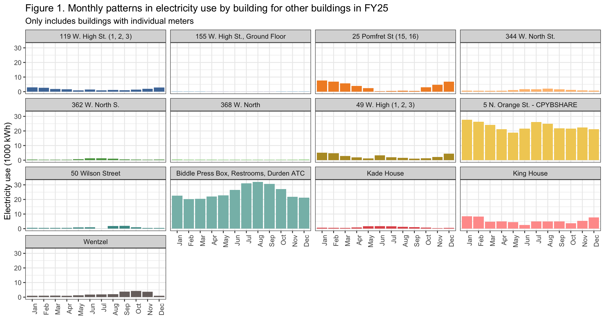
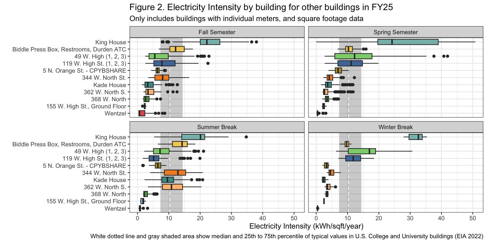

Last updated: 2026-03-30
Checks: 6 1
Knit directory: dickinson_power/
This reproducible R Markdown analysis was created with workflowr (version 1.7.2). The Checks tab describes the reproducibility checks that were applied when the results were created. The Past versions tab lists the development history.
The R Markdown is untracked by Git. To know which version of the R
Markdown file created these results, you’ll want to first commit it to
the Git repo. If you’re still working on the analysis, you can ignore
this warning. When you’re finished, you can run
wflow_publish to commit the R Markdown file and build the
HTML.
Great job! The global environment was empty. Objects defined in the global environment can affect the analysis in your R Markdown file in unknown ways. For reproduciblity it’s best to always run the code in an empty environment.
The command set.seed(20260107) was run prior to running
the code in the R Markdown file. Setting a seed ensures that any results
that rely on randomness, e.g. subsampling or permutations, are
reproducible.
Great job! Recording the operating system, R version, and package versions is critical for reproducibility.
Nice! There were no cached chunks for this analysis, so you can be confident that you successfully produced the results during this run.
Great job! Using relative paths to the files within your workflowr project makes it easier to run your code on other machines.
Great! You are using Git for version control. Tracking code development and connecting the code version to the results is critical for reproducibility.
The results in this page were generated with repository version 1e1b16b. See the Past versions tab to see a history of the changes made to the R Markdown and HTML files.
Note that you need to be careful to ensure that all relevant files for
the analysis have been committed to Git prior to generating the results
(you can use wflow_publish or
wflow_git_commit). workflowr only checks the R Markdown
file, but you know if there are other scripts or data files that it
depends on. Below is the status of the Git repository when the results
were generated:
Ignored files:
Ignored: .DS_Store
Ignored: .Rhistory
Ignored: .Rproj.user/
Ignored: analysis/.DS_Store
Ignored: analysis/.Rhistory
Ignored: analysis_to-fix/.DS_Store
Ignored: data/.DS_Store
Ignored: data/FY25 Main Meter Data.xlsx
Ignored: data/building_list_FY25_updated.xlsx
Ignored: data/graph_data_life_exp.csv
Ignored: data/housing_counts.csv
Ignored: keys/.DS_Store
Ignored: output/annual_kwh.csv
Ignored: output/building_check.csv
Ignored: output/building_check.xlsx
Ignored: output/daily_kwh.csv
Ignored: output/kwh_academic_2026-03-16.csv
Ignored: output/kwh_academic_2026-03-17.csv
Ignored: output/kwh_academic_2026-03-18.csv
Ignored: output/kwh_academic_2026-03-22.csv
Ignored: output/kwh_academic_2026-03-23.csv
Ignored: output/kwh_academic_2026-03-25.csv
Ignored: output/kwh_annual.csv
Ignored: output/kwh_annual_2026-03-04.csv
Ignored: output/kwh_annual_2026-03-12.csv
Ignored: output/kwh_annual_2026-03-16.csv
Ignored: output/kwh_annual_2026-03-17.csv
Ignored: output/kwh_annual_2026-03-18.csv
Ignored: output/kwh_annual_2026-03-22.csv
Ignored: output/kwh_annual_2026-03-23.csv
Ignored: output/kwh_annual_2026-03-25.csv
Ignored: output/kwh_annual_20260225.csv
Ignored: output/kwh_annual_20260226.csv
Ignored: output/kwh_daily.csv
Ignored: output/kwh_daily_2026-03-04.csv
Ignored: output/kwh_daily_2026-03-12.csv
Ignored: output/kwh_daily_2026-03-16.csv
Ignored: output/kwh_daily_2026-03-17.csv
Ignored: output/kwh_daily_2026-03-18.csv
Ignored: output/kwh_daily_2026-03-22.csv
Ignored: output/kwh_daily_2026-03-23.csv
Ignored: output/kwh_daily_2026-03-25.csv
Ignored: output/kwh_daily_20260225.csv
Ignored: output/kwh_daily_20260226.csv
Ignored: output/kwh_main_annual.csv
Ignored: output/kwh_main_daily.csv
Untracked files:
Untracked: analysis/Report_I_Academic.Rmd
Untracked: analysis/Report_I_Admin.rmd
Untracked: analysis/Report_I_Medium.Rmd
Untracked: analysis/Report_I_Other.Rmd
Untracked: analysis/Report_I_Residential-L.Rmd
Untracked: analysis/Report_I_Small_Residence_Halls.Rmd
Unstaged changes:
Deleted: analysis/PS05_prelim_results_Academic.Rmd
Deleted: analysis/PS05_prelim_results_Admin.Rmd
Deleted: analysis/PS05_prelim_results_Community.Rmd
Deleted: analysis/PS05_prelim_results_Other.Rmd
Deleted: analysis/PS05_prelim_results_Res-Hall_L.Rmd
Deleted: analysis/PS05_prelim_results_Res_Hall_L_alt.Rmd
Deleted: analysis/PS05_prelim_results_Res_Hall_M.Rmd
Deleted: analysis/PS05_prelim_results_Res_Hall_S.Rmd
Modified: analysis/main_meter_anova.Rmd
Modified: analysis/main_meter_regression.Rmd
Note that any generated files, e.g. HTML, png, CSS, etc., are not included in this status report because it is ok for generated content to have uncommitted changes.
There are no past versions. Publish this analysis with
wflow_publish() to start tracking its development.
The “other” category is the accumulation of buildings that do not align with any one group. Some of the buildings may host residents but are not exclusively residential – such as Kade and King House. Some buildings represent multiple structures that are on the same meter, for example: Biddle Press Box, Restrooms, Durden ATC (Biddle). 5 N. Orange St. is shared by the facilities group, the half of the building represented by this category is used by ProjectSHARE and the Central Pennsylvania Youth Ballet (CPYB). As a result of the diversity within the category, it is hard to identify a main function.
There are 17 buildings in total, which makes up roughly 8% of the total buildings on campus. The total square feet across every building category is 1,946,878 square feet; buildings listed as other have a combined total of 250,130 square feet (Table 1).
The buildings in this category are incredibly variable. There is not one consistent factor across all buildings besides being owned by Dickinson. The largest building is the Kline, which contributes to 20% of the other type buildings total square feet, whereas the smallest, 155 W. High St., Ground Floor, contributes less than 1%. There is also a lack of consistency with variables that have been identified as strong influences on electricity use, such as: population, age, and HVAC systems.
A majority of the other buildings have complete individual data sets. Kline, which has been disaggregated from the main meter, only has 35% of daily data and was therefore removed from the analysis due to insufficient information. We only have temperature data for Boiling Springs Cottage and Boiling Springs Farm. 25 Pomfret and 50 Wilson Street are missing square footage data. There are no buildings on the Weis meter.
library(tidyverse)── Attaching core tidyverse packages ──────────────────────── tidyverse 2.0.0 ──
✔ dplyr 1.2.0 ✔ readr 2.2.0
✔ forcats 1.0.1 ✔ stringr 1.6.0
✔ ggplot2 4.0.2 ✔ tibble 3.3.1
✔ lubridate 1.9.5 ✔ tidyr 1.3.2
✔ purrr 1.2.1
── Conflicts ────────────────────────────────────────── tidyverse_conflicts() ──
✖ dplyr::filter() masks stats::filter()
✖ dplyr::lag() masks stats::lag()
ℹ Use the conflicted package (<http://conflicted.r-lib.org/>) to force all conflicts to become errorslibrary(DT)
library(paletteer)
annual_data <- read.csv("./output/kwh_annual_2026-03-17.csv")
academic_data <- read.csv("./output/kwh_academic_2026-03-17.csv")
daily <- read.csv("./output/kwh_daily_2026-03-17.csv")str(annual_data)'data.frame': 99 obs. of 8 variables:
$ type : chr "Academic" "Academic" "Academic" "Academic" ...
$ meter : chr "Individual" "Individual" "Individual" "Individual" ...
$ NAME : chr "162-164 Dickinson Ave." "46 S. West St." "57 S. College" "Carlisle Theatre" ...
$ days_perc: num 100 100 100 100 100 ...
$ kwh : num 9217 6493 12221 29070 21575 ...
$ kwh_corr : num 9217 6493 12221 29070 21575 ...
$ sqft : int 2500 1775 4576 4000 2500 29133 33692 11039 22000 120000 ...
$ occupants: num NA NA NA NA NA NA NA NA NA NA ...str(academic_data)'data.frame': 99 obs. of 8 variables:
$ type : chr "Academic" "Academic" "Academic" "Academic" ...
$ meter : chr "Individual" "Individual" "Individual" "Individual" ...
$ NAME : chr "162-164 Dickinson Ave." "46 S. West St." "57 S. College" "Carlisle Theatre" ...
$ days_perc: num 100 100 100 100 100 ...
$ kwh : num 4986 3208 8443 15478 15421 ...
$ kwh_corr : num 4986 3208 8443 15478 15421 ...
$ sqft : int 2500 1775 4576 4000 2500 29133 33692 11039 22000 120000 ...
$ occupants: num NA NA NA NA NA NA NA NA NA NA ...str(daily)'data.frame': 37230 obs. of 10 variables:
$ type : chr "Residential - M" "Residential - M" "Residential - M" "Residential - M" ...
$ meter : chr "Individual" "Individual" "Individual" "Individual" ...
$ NAME : chr "100 S. West St." "100 S. West St." "100 S. West St." "100 S. West St." ...
$ days_perc: num 100 100 100 100 100 100 100 100 100 100 ...
$ sqft : int 7190 7190 7190 7190 7190 7190 7190 7190 7190 7190 ...
$ occupants: num 19 19 19 19 19 19 19 19 19 19 ...
$ period : chr "Summer Break" "Summer Break" "Summer Break" "Summer Break" ...
$ date : chr "2024-07-01" "2024-07-02" "2024-07-03" "2024-07-04" ...
$ kwh : num 98.5 106.7 122.8 135.9 138 ...
$ ave_temp : int 69 73 78 81 84 86 84 84 86 87 ...annual_other <- annual_data %>%
filter(type == "Other") %>%
mutate(kwh_per_sqft = round(kwh_corr / sqft, digits = 1),
cost_dol = round(kwh_corr * .08138507),
CO2e_MT = round(.30082405*kwh_corr/1000),
days_perc = round(days_perc),
kwh = round(kwh),
kwh_corr = round(kwh_corr),
building = NAME)%>%
arrange(desc(kwh_corr)) %>%
select(meter, building, days_perc, sqft, kwh, kwh_corr, kwh_per_sqft, cost_dol, CO2e_MT) %>%
filter(building != "Kline Life Sport Complex")str(annual_other)'data.frame': 13 obs. of 9 variables:
$ meter : chr "Individual" "Individual" "Individual" "Individual" ...
$ building : chr "Biddle Press Box, Restrooms, Durden ATC" "5 N. Orange St. - CPYBSHARE" "King House" "25 Pomfret St (15, 16)" ...
$ days_perc : num 100 100 100 95 100 100 100 100 100 95 ...
$ sqft : int 24895 42500 2745 NA 3000 25000 2240 1586 1800 NA ...
$ kwh : num 298475 277590 64445 42473 30832 ...
$ kwh_corr : num 298475 277590 64445 44548 30832 ...
$ kwh_per_sqft: num 12 6.5 23.5 NA 10.3 0.9 8.9 7.8 5.8 NA ...
$ cost_dol : num 24291 22592 5245 3626 2509 ...
$ CO2e_MT : num 90 84 19 13 9 7 6 4 3 3 ...academic_other <- academic_data %>%
filter(type == "Other") %>%
mutate(kwh_per_sqft = round(kwh_corr / sqft, digits = 1),
cost_dol = round(kwh_corr * .08138507),
CO2e_MT = round(.30082405*kwh_corr/1000),
days_perc = round(days_perc),
kwh = round(kwh),
kwh_corr = round(kwh_corr),
building = NAME)%>%
arrange(desc(kwh_corr)) %>%
select(meter, building, days_perc, sqft, kwh, kwh_corr, kwh_per_sqft, cost_dol, CO2e_MT) %>%
filter(building != "Kline Life Sport Complex")str(academic_other)'data.frame': 13 obs. of 9 variables:
$ meter : chr "Individual" "Individual" "Individual" "Individual" ...
$ building : chr "5 N. Orange St. - CPYBSHARE" "Biddle Press Box, Restrooms, Durden ATC" "King House" "25 Pomfret St (15, 16)" ...
$ days_perc : num 100 100 100 100 100 100 100 100 100 100 ...
$ sqft : int 42500 24895 2745 NA 3000 25000 2240 1586 NA 1800 ...
$ kwh : num 192318 190898 46665 36378 21369 ...
$ kwh_corr : num 192318 190898 46665 36378 21369 ...
$ kwh_per_sqft: num 4.5 7.7 17 NA 7.1 0.7 6.7 4.1 NA 2.9 ...
$ cost_dol : num 15652 15536 3798 2961 1739 ...
$ CO2e_MT : num 58 57 14 11 6 5 5 2 2 2 ...other.daily<-daily%>%
filter(type=="Other")%>%
mutate(date=ymd(date),
day=wday(date,label=TRUE),
month=month(date,label=TRUE))%>%
mutate(kwh.total=kwh*365,
kwh.sqft.year=kwh.total/sqft)%>%
filter(NAME !="Kline Life Sport Complex", NAME != "Boiling Springs Cottage", NAME != "Boiling Springs Farm")
# Kline removed due to the building only having data for 37% of days
# Boiling Springs Cottage and Farm removed due to only temperature data being available
str(other.daily)'data.frame': 4745 obs. of 14 variables:
$ type : chr "Other" "Other" "Other" "Other" ...
$ meter : chr "Individual" "Individual" "Individual" "Individual" ...
$ NAME : chr "119 W. High St. (1, 2, 3)" "119 W. High St. (1, 2, 3)" "119 W. High St. (1, 2, 3)" "119 W. High St. (1, 2, 3)" ...
$ days_perc : num 100 100 100 100 100 100 100 100 100 100 ...
$ sqft : int 2240 2240 2240 2240 2240 2240 2240 2240 2240 2240 ...
$ occupants : num NA NA NA NA NA NA NA NA NA NA ...
$ period : chr "Summer Break" "Summer Break" "Summer Break" "Summer Break" ...
$ date : Date, format: "2024-07-01" "2024-07-02" ...
$ kwh : num 24 17.9 21.8 30 38.3 ...
$ ave_temp : int 69 73 78 81 84 86 84 84 86 87 ...
$ day : Ord.factor w/ 7 levels "Sun"<"Mon"<"Tue"<..: 2 3 4 5 6 7 1 2 3 4 ...
$ month : Ord.factor w/ 12 levels "Jan"<"Feb"<"Mar"<..: 7 7 7 7 7 7 7 7 7 7 ...
$ kwh.total : num 8767 6524 7953 10936 13988 ...
$ kwh.sqft.year: num 3.91 2.91 3.55 4.88 6.24 ...It is difficult to determine what a typical building is in this category due to the variation in square footage and usage of the buildings. However, the median kWh per year is 15,064, with a median kWh per square foot of 4.1.
The median cost value for a building in this category is $1226 per year, while the mean is $3399. The mean is significantly higher than the median because the two highest individually metered users in our category, Biddle press box, Restrooms, and Durden ATC, and 5 N. Orange St. CPYB/Project Share, use significantly more electricity than the rest of the buildings in the category.
The median GHG emissions in the other category is 5 metric tons of CO2 equivalent, with a mean of 12.62 metric tons of CO2 equivalent. While the median values better represent the majority of the buildings in the category, the mean value is still important, as it shows how much influence the biggest electricity consumers have on this category.
The conversion factors to find estimates for cost and GHG emissions were derived from Dickinson College’s Greenhouse Gas Inventory (Leary, 2025).
Biddle Press box, Restrooms and Durden ATC and 5 N. Orange St. CPYB/Project Share are the two biggest overall electricity users throughout the 2025 fiscal year (Table 1). Biddle used 298,475 kWh, and 5 N. Orange St. Used 277,590 kWh. These values were much higher than the third highest electricity consumer, which was King House, using 64,445 kWh throughout the year. However, King House was the largest electricity user when normalized by square footage, with a value of 23.5 kWh/sqft. Biddle was the second highest user when normalized, at 12.0 kWh/sqft. 5 N. Orange St. Was only the sixth highest electricity user when normalized, with 6.5 kWh/sqft. 155 W High St Ground Floor, and 368 W. North were the two smallest electricity users over the fiscal year, using 1068, and 3151 kWh respectively. Wentzel was the lowest normalized electricity user, using only 0.9 kWh/sqft. There is no square footage data for 25 Pomfret St or 50 Wilson St, so these two buildings were unable to be included in the normalization analysis.
datatable(annual_other, caption = "Table 1. Total electricity use, estimated financial cost, and estimated greenhouse gas emissions of other buildings during fiscal year 2025 ",
rownames = FALSE,
colnames = c("Meter", "Building", "Days of data (%)", "Square footage", "kWh", "kWh (corrected)", "kWh per sqft", "cost ($)", "CO2e (MT)"),
filter = "none",
class = "compact",
options = list(pagelength = 10, audowidth = TRUE, dom = 'p'))summary(annual_other) meter building days_perc sqft
Length:13 Length:13 Min. : 95.00 Min. : 500
Class :character Class :character 1st Qu.:100.00 1st Qu.: 1348
Mode :character Mode :character Median :100.00 Median : 2240
Mean : 99.23 Mean : 9670
3rd Qu.:100.00 3rd Qu.:13948
Max. :100.00 Max. :42500
NA's :2
kwh kwh_corr kwh_per_sqft cost_dol
Min. : 1068 Min. : 1068 Min. : 0.900 Min. : 87
1st Qu.: 8693 1st Qu.: 9118 1st Qu.: 4.500 1st Qu.: 742
Median : 19990 Median : 19990 Median : 6.500 Median : 1627
Mean : 61456 Mean : 61648 Mean : 7.891 Mean : 5017
3rd Qu.: 42473 3rd Qu.: 44548 3rd Qu.: 9.600 3rd Qu.: 3626
Max. :298475 Max. :298475 Max. :23.500 Max. :24291
NA's :2
CO2e_MT
Min. : 0.00
1st Qu.: 3.00
Median : 6.00
Mean :18.54
3rd Qu.:13.00
Max. :90.00
During the academic year, the same 2 buildings of Biddle press box, Restrooms, and Durden ATC are still by far the highest users (Table 2). However, during the academic year, 5 N. Orange St. Is the highest total electricity user, using 192,318 kWh, with Biddle right behind at 190,898 kWh. King House is still the third highest, at 46,665 kWh during the academic year. King House and Biddle are also still the two highest users when normalized, with values of 17.0 and 7.7 kWh/sqft respectively. 5 N. Orange St. Is the fifth highest electricity user when normalized, with a value of 4.5 kWh/sqft. During the academic year, 155 W High St Ground Floor and 368 W North are still the two lowest total electricity users, using 782 and 2206 kWh respectively. Wentzel is also still the lowest electricity user when normalized, using 0.7 kWh/sqft.
datatable(academic_other, caption = "Table 2. Total electricity use, estimated financial cost, and estimated greenhouse gas emissions of other buildings during academic year 2024/2025",
rownames = FALSE,
colnames = c("Meter", "Building", "Days of data (%)", "Square footage", "kWh", "kWh (corrected)", "kWh per sqft", "cost ($)", "CO2e (MT)"),
filter = "none",
class = "compact",
options = list(pagelength = 10, audowidth = TRUE, dom = 'p'))summary(academic_other) meter building days_perc sqft
Length:13 Length:13 Min. :100 Min. : 500
Class :character Class :character 1st Qu.:100 1st Qu.: 1348
Mode :character Mode :character Median :100 Median : 2240
Mean :100 Mean : 9670
3rd Qu.:100 3rd Qu.:13948
Max. :100 Max. :42500
NA's :2
kwh kwh_corr kwh_per_sqft cost_dol
Min. : 782 Min. : 782 Min. : 0.700 Min. : 64
1st Qu.: 5302 1st Qu.: 5302 1st Qu.: 2.350 1st Qu.: 432
Median : 15064 Median : 15064 Median : 4.100 Median : 1226
Mean : 41758 Mean : 41758 Mean : 5.182 Mean : 3399
3rd Qu.: 36378 3rd Qu.: 36378 3rd Qu.: 6.900 3rd Qu.: 2961
Max. :192318 Max. :192318 Max. :17.000 Max. :15652
NA's :2
CO2e_MT
Min. : 0.00
1st Qu.: 2.00
Median : 5.00
Mean :12.62
3rd Qu.:11.00
Max. :58.00
There is overall a lot of variability in the seasonal patterns among buildings (Figure 1). Some buildings such as Biddle Press Box, Restrooms, and Durden ATC, and 362 W. North St display patterns of peak electricity use in the summer. Other buildings like King House, and 25 Pomfret St display the opposite pattern, and have peak electricity use in the winter, with the lowest use in the summer months. Wentzel also has a unique pattern, peaking in the fall during the months of September-November. All these buildings also display very different values for electricity usage due to the variance in the building category.
ggplot(other.daily, aes(x=month, y=kwh/10^3, fill=NAME))+
geom_col(stat = "identity", position = "stack")+
facet_wrap(. ~ NAME) +
scale_fill_paletteer_d("ggthemes::Tableau_20")+
labs(title="Figure 1. Monthly patterns in electricity use by building for other buildings in FY25",
subtitle = "Only includes buildings with individual meters",
x="",
y="Electricity use (1000 kWh)",
fill="Building")+
theme_bw()+
theme(axis.text.x = element_text(angle = 90, hjust = 1))+
theme(legend.position = "none")
Between buildings in this category there is a lot of variance in electricity intensity, but the buildings displaying high or low energy intensity is generally consistent, with Summer Break displaying some exceptions (Figure 2). In all times of year, King House has by far the highest median and IQR compared to the rest of the buildings in this category. These values are also much higher than the median and Interquartile range (IQR) values for similar buildings at other colleges and universities (EIA 2022). Biddle Press Box, Restrooms, and Durden ATC, is generally consistent throughout the year, with a slight peak in electricity intensity during Summer Break, but the value is comparable to similar buildings at other colleges and universities. Most of the buildings in this category are also typically below the comparison values, but in the summer, there are 5 buildings that are very similar or higher: King House, Biddle, 344 W North St, Kade House, and 362 W North St. It can also be seen that 49 W High St and 119 W High St see noticeable peaks in electricity intensity during the spring semester, and winter break.
other.box<-other.daily%>%
filter(!is.na(sqft))
ggplot(other.box,aes(x=reorder(NAME,kwh.total/sqft,FUN=median),y=kwh.sqft.year,fill=NAME))+
annotate("rect", xmin=-Inf, xmax=Inf, ymin=7.4, ymax=14.3,
color="lightgrey", alpha= 0.3) +
geom_hline(yintercept=10.3, linetype="dashed", color="white") +
geom_boxplot()+
facet_wrap(. ~ period) +
labs(title="Figure 2. Electricity Intensity by building for other buildings in FY25",
subtitle="Only includes buildings with individual meters, and square footage data",
x="",
y="Electricity Intensity (kWh/sqft/year)",
caption = "White dotted line and gray shaded area show median and 25th to 75th percentile of typical values in U.S. College and University buildings (EIA 2022)")+
coord_flip()+
theme_bw()+
theme(legend.position="none")+
scale_fill_paletteer_d("ggthemes::Tableau_20")
# median and IQR come from EIA (2022) table, annual kWh per square foot for Colleges/Universities
# https://www.eia.gov/consumption/commercial/data/2018/ce/pdf/c22.pdfAcross all building categories it would be helpful to know how they are being heated and cooled, and when facilities automates heating and cooling changes. Additional information regarding occupation and how many people are in a building at a time would improve our understanding. Since there is such a lack of consistency, to improve our understanding for this building category, knowing what the heating and cooling systems are and how facilities expect them to use electricity would help us identify anomalies.
Buildings in this category must be looked at individually due to the lack of connection. 5 N. Orange St. is using electricity in a predictable way given the buildings layout and purpose despite being one of the largest electricity consumers. However, Biddle Press Box, Restrooms, Durden ATC has unusually high use at all times where we would expect to see a decrease in use seasonally, suggesting that there is room for improvement. Other individual buildings have not been observed as heavily as 5 N. Orange St. And Biddle Press Box, Restrooms, Durden ATC.
Our analysis cannot be through comparison, which is why it is so important that we receive feedback from facilities and improve our understanding of HVAC systems.
Based off the total electricity consumption for this category, Biddle Press Box, Restrooms, and Durden ATC is definitely the most intriguing building to explore further. What makes this building so interesting is its peak in total use during the summer months. There is likely not as much use for these buildings during the summer, so this could potentially be an easy way to cut down a large amount of electricity. 5 N. Orange St might also be interesting to look into because of the large amount of electricity it consumes, but since the electricity intensity is not one of the highest values, this building may be operating reasonably efficiently already. It is unlikely that we could find a good model for this building category given the variance in seasonal patterns, electricity intensity, and total electricity usage.
Another pattern that is very interesting in the data is the consistently very high electricity intensity at King House. This is substantially higher than the other buildings in the category, and even surpasses the comparison value from other colleges and universities. This could be another building to look more into, to see how it could be more efficient with electricity usage. Wentzel’s electricity use peaking in the fall is also an interesting pattern, and it could be valuable to look more into this building to find out why this is, and if the electricity use could be lowered during the peak months. However, since the total usage of this building is not very high, it will likely not be a priority of further analysis.
Energy Information Administration (EIA). (2022). 2018 Commercial Buildings Energy Consumption Survey (CBECS). https://www.eia.gov/consumption/commercial/
Leary, N. (2025). Dickinson College Greenhouse Gas Inventory 2008-2023. Center for Sustainability Education.
Ben did the wrangling and creating of tables, working with the annual and academic dataset. Because our data is not residential, we did not have occupancy data, and thus the two tables were the same setup and code could be copied with small changes. Kyrie worked on the wrangling of the daily data and the two figures. Ben wrote the answers to the electricity use summary and the last 2 of the 4 questions under recommendations. Kyrie wrote the answers for the background and the first two questions of recommendations. No AI tools were used for any part of this report.
sessionInfo()R version 4.5.2 (2025-10-31)
Platform: x86_64-apple-darwin20
Running under: macOS Ventura 13.7.8
Matrix products: default
BLAS: /Library/Frameworks/R.framework/Versions/4.5-x86_64/Resources/lib/libRblas.0.dylib
LAPACK: /Library/Frameworks/R.framework/Versions/4.5-x86_64/Resources/lib/libRlapack.dylib; LAPACK version 3.12.1
locale:
[1] en_US.UTF-8/en_US.UTF-8/en_US.UTF-8/C/en_US.UTF-8/en_US.UTF-8
time zone: America/New_York
tzcode source: internal
attached base packages:
[1] stats graphics grDevices utils datasets methods base
other attached packages:
[1] paletteer_1.7.0 DT_0.34.0 lubridate_1.9.5 forcats_1.0.1
[5] stringr_1.6.0 dplyr_1.2.0 purrr_1.2.1 readr_2.2.0
[9] tidyr_1.3.2 tibble_3.3.1 ggplot2_4.0.2 tidyverse_2.0.0
loaded via a namespace (and not attached):
[1] sass_0.4.10 generics_0.1.4 prismatic_1.1.2 stringi_1.8.7
[5] hms_1.1.4 digest_0.6.39 magrittr_2.0.4 timechange_0.4.0
[9] evaluate_1.0.5 grid_4.5.2 RColorBrewer_1.1-3 fastmap_1.2.0
[13] rprojroot_2.1.1 workflowr_1.7.2 jsonlite_2.0.0 rematch2_2.1.2
[17] promises_1.5.0 crosstalk_1.2.2 scales_1.4.0 jquerylib_0.1.4
[21] cli_3.6.5 rlang_1.1.7 withr_3.0.2 cachem_1.1.0
[25] yaml_2.3.12 otel_0.2.0 tools_4.5.2 tzdb_0.5.0
[29] httpuv_1.6.16 vctrs_0.7.1 R6_2.6.1 lifecycle_1.0.5
[33] git2r_0.36.2 htmlwidgets_1.6.4 fs_1.6.7 pkgconfig_2.0.3
[37] pillar_1.11.1 bslib_0.10.0 later_1.4.8 gtable_0.3.6
[41] glue_1.8.0 Rcpp_1.1.1 xfun_0.56 tidyselect_1.2.1
[45] rstudioapi_0.18.0 knitr_1.51 farver_2.1.2 htmltools_0.5.9
[49] labeling_0.4.3 rmarkdown_2.30 compiler_4.5.2 S7_0.2.1